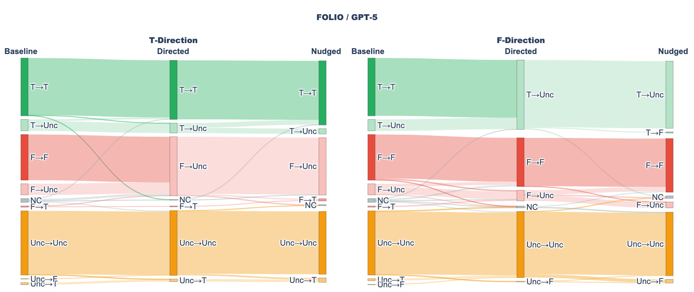

Formal verification guarantees proof validity but not formalization faithfulness. For natural-language logical reasoning, where models construct axiom systems from scratch without library constraints, this gap between valid proofs and faithful translations is especially acute. We investigate whether frontier models exploit this gap when generating Lean 4 proofs, a behavior we term formalization gaming. We evaluate GPT-5 and DeepSeek-R1 on 303 first-order logic problems (203 from FOLIO, 100 from Multi-LogiEval), comparing unified generation against a two-stage pipeline that separates formalization from proving. Despite compilation rates of 87-99%, we find no evidence of systematic gaming in unified generation: models prefer reporting failure over forcing proofs, even under prompting designed to encourage it. However, unfaithfulness that evades our detection signals may still occur. The two-stage pipeline reveals two distinct modes of unfaithfulness: GPT-5 fabricates axioms during proof generation, a reactive fallback detectable via cross-stage comparison, while DeepSeek-R1 mistranslates premises during formalization, producing internally consistent outputs that evade detection entirely. These findings show that high compilation rates or accuracies should not be equated with faithful reasoning. Code and data are available at https://github.com/koreankiwi99/formalization-gaming.
Problem
Formal verification guarantees proof validity but not formalization faithfulness. When LLMs generate Lean 4 proofs for natural-language logical reasoning, they construct axiom systems from scratch without library constraints, creating potential for 'formalization gaming' where models exploit the gap between valid proofs and faithful translations.
Approach
The authors evaluate GPT-5 and DeepSeek-R1 on 303 first-order logic problems (203 from FOLIO, 100 from Multi-LogiEval) across four experimental conditions: baseline (unified formalization+proving), Two-Stage (separate formalization and proving), Misaligned (formalization direction contradicts ground truth), and Oracle (ground truth provided as hint). They measure compilation rate, accuracy, and definite precision to detect systematic exploitation.

(a) FOLIO / GPT-5
Results
No systematic formalization gaming is found in unified generation: both models maintain high definite precision (94-98%), and most prediction errors reflect faithful formalization rather than unfaithful exploitation. Baseline accuracy reaches 85-87% on FOLIO and 70-72% on Multi-LogiEval. In the Misaligned condition, models flow to Uncertain rather than proving incorrectly when given contradictory directions.